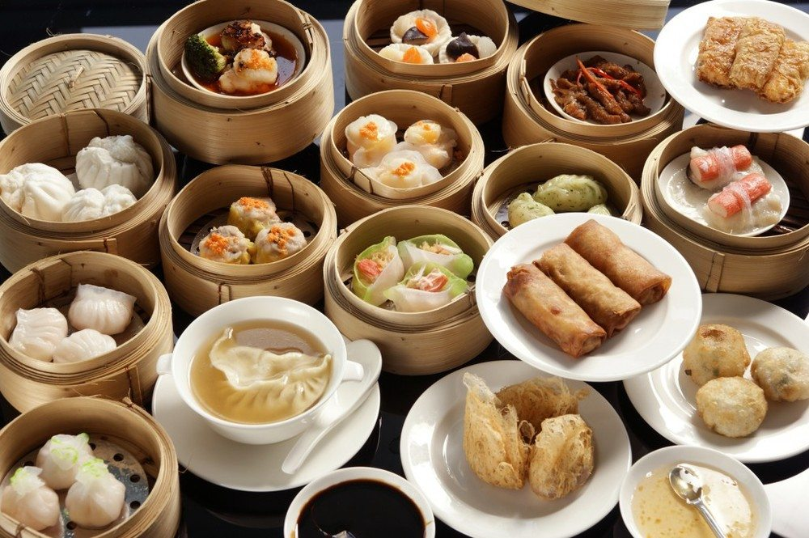
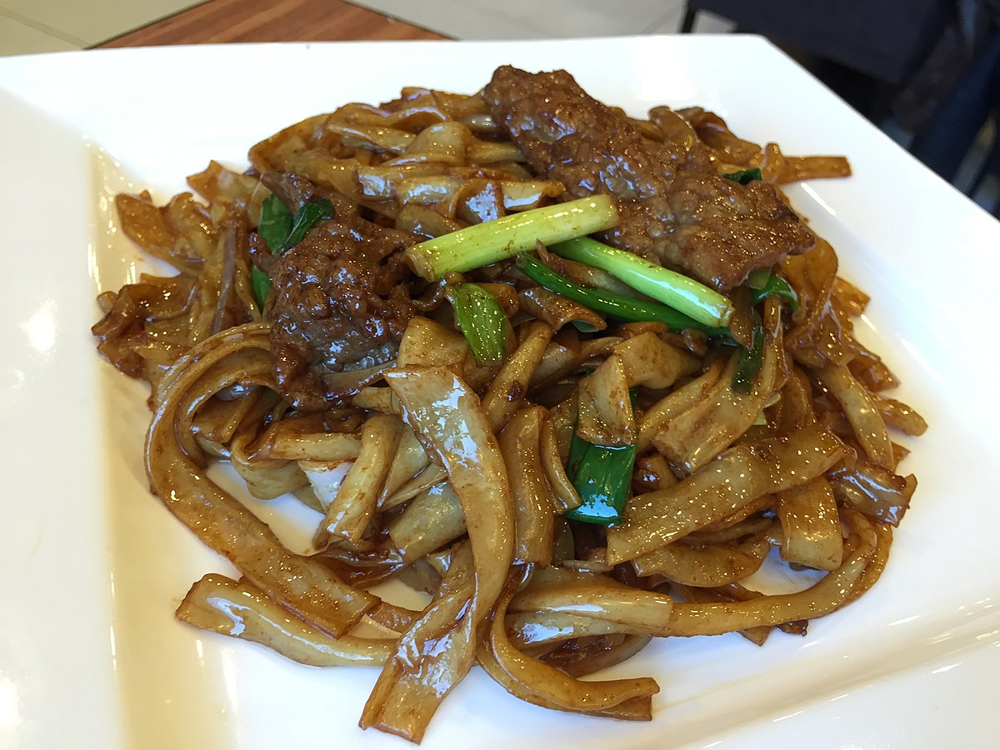
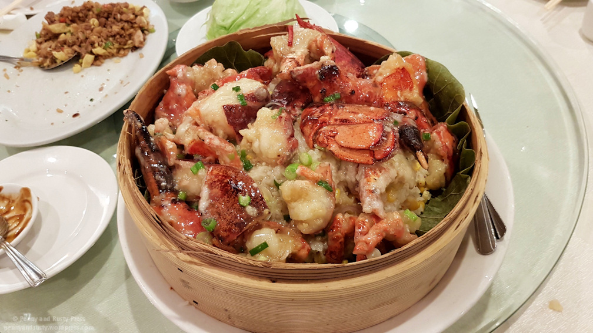
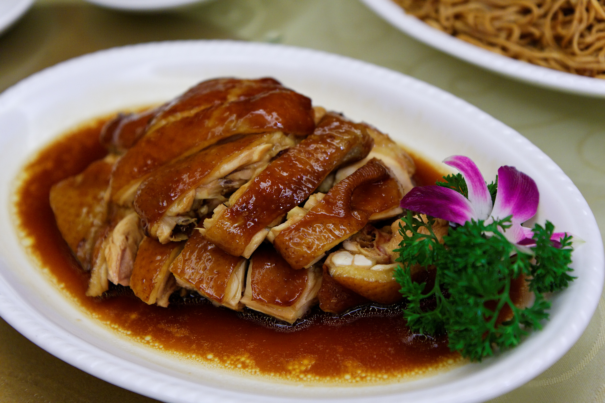
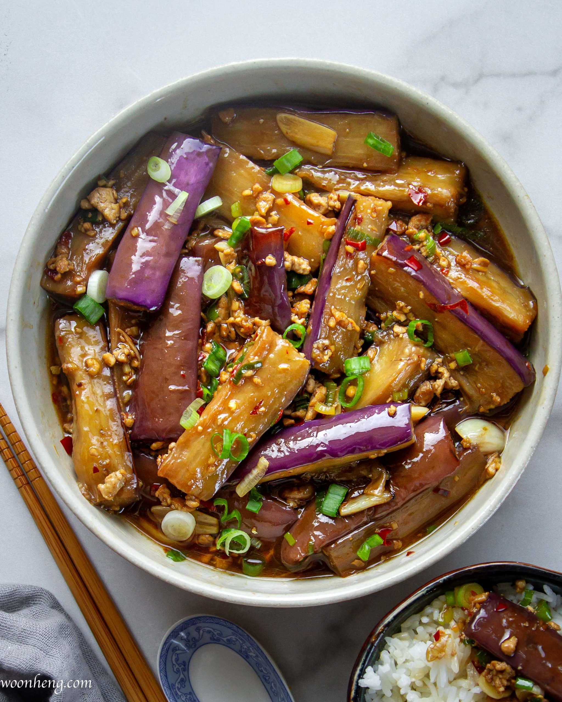

Order
Order
What to order at Cantonese Resturants
There are plenty of cantonese dishes, ranging from steamed food to stir fry. This is an introduction to the most common food items in cantonese resturants.
Starting with breakfast most of the items are either steamed or deep fried. They all come in groups single items which is perfect to share with others.
For lunch most resturants like to serve individual meals, mostly one dish with rice. Less for sharing and more for one person.
Dinner service are the dishes where are ment for sharing and all come in very large quantities. These are perfect for any special occasion.
Breakfast
Main ingredients include:
Shrimp
Ground Pork
Its made by combining shrimp and ground pork wrapped with a rice wrapper, then it is wrapped into a dumpling like shape then steamed. This is one of the must haves at any Dimsum resturant.
Main ingredients include:
Ground Pork
Mushrooms
Crab Roe
Shiu mai is similar to a dumpling but it is mainly ground pork with mushrooms wrapped with wonton wrappers and an open top, it is then topped with crab roe. This is then steamed and served.
Main ingredients include:
Shrimp
Ground Pork
Spring rolls are the classic usually with shrimp with ground pork inside then is wrapped with spring roll wrappers then it is deep fried untill golden brown and served.
Main ingredients include:
Pork butt
Rice Flour Buns
Barbeque Pork with a sweet sauce stuffed into rice flour bun. Then the bun is steamed where the buns become fluffy and then served.
Lunch
Main ingredients include:
Chicken
Slowed cooked whole chicken, it simmers in salted warm water for around 2 hours it is then served with rice
Main ingredients include:
Beef Briskets
Potatoes
Cantonese style curry cooked with beef briskets and potatoes generally less spicy and more coconut milk in the curry. This is served with rice

Main ingredients include:
Sliced Beef
Rice noodles
leeks
bean sprouts
Stirfry of rice noodles, sliced beef, leeks and bean sprouts with soysauce, and is then served usually with garlic hotsauce.
Main Ingredients include:
Century egg
Lean Pork
Rice
Congee is rice cooked with a lot more water to give it a thicker consistancy. This is cooked with century egg and lean pork. It is served by itself.
Dinner

Main ingredients include:
Lobseter
Sticky Rice
This is cooked together to give the rice the lobster flavor and is served with lobster meat
Main ingredients include:
Fish of choice
Steamed fish with soysauce

Main ingredients include:
Chicken
Soy Sauce
Chicken is slow cooked in soysauce. Chicken needs to be based and at low heat for 2 hours.
Eggplant in Spicy Garlic Sauce Hot Pot
Main ingredients include:
Eggplant
Mushroos
Julian Pork
Spicy Bean Paste
Red Vinegar
Slow cooked all the ingredients in a pot with water the results are not exactly like hot pot the sauce is thicker and you only eat the contents and there is no soup